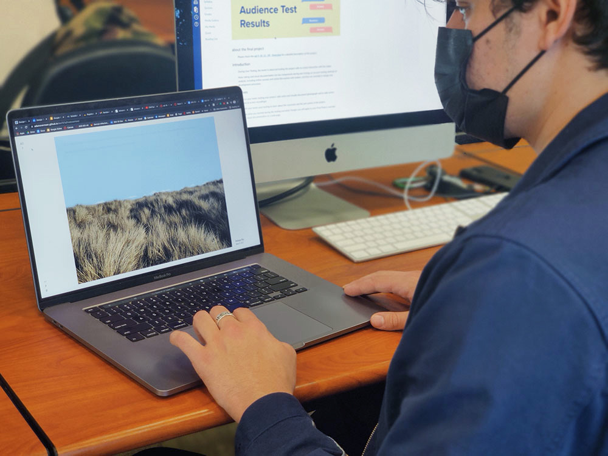

Turning a photography project into an interactive website

Project
Under the Same Sky is a photography exhibition that I designed and built as part of my Interactive Media class. My objective is to present my photography in a way that engages its viewers through imagery, interaction, and animation.
Link
·adamovermeer.com/utssInvolvement
- Research and ideation
- Mockups
- Frontend development
- Animation
- User testing
All the small things
To keep the focus of the exhibition on the photography, I kept all the UI as minimal as possible. I went through many different mocks, and spent a lot of time tweaking my transition animations until it felt just right. A lot of my UI decisions came from research into how other photographers displayed their work on the web.
Animation
It is the animation that brings this exhibit to life: moving clouds and birds cross the sky at random times, creating little moments that keep the user engaged.
It was very important to me to create animations that weren’t any more complex than needed to sell the final effect. A detailed bird would only slow down the site.
User testing
Every stage of mockups was refined through formal critique sessions with my classmates, which helped me dial in the subtle touches that make the site work so well. I also got to conduct user testing with one of my prototypes, observing users’ behavior and noting what elements did or did not work.
